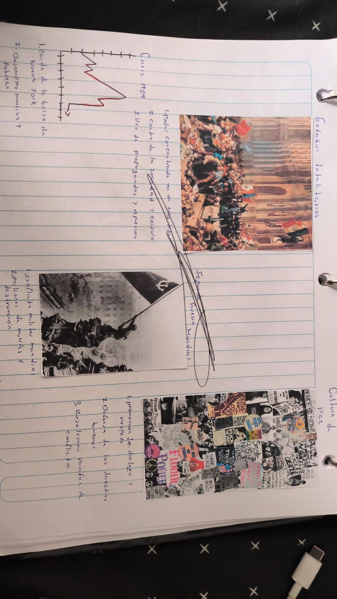
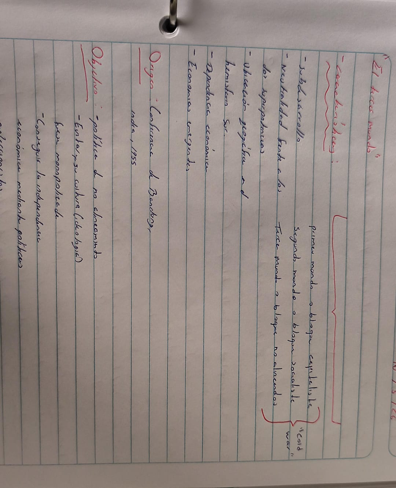
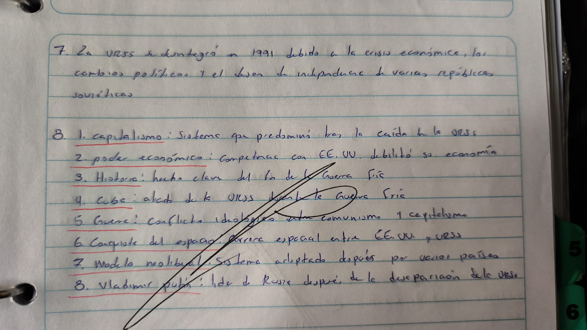
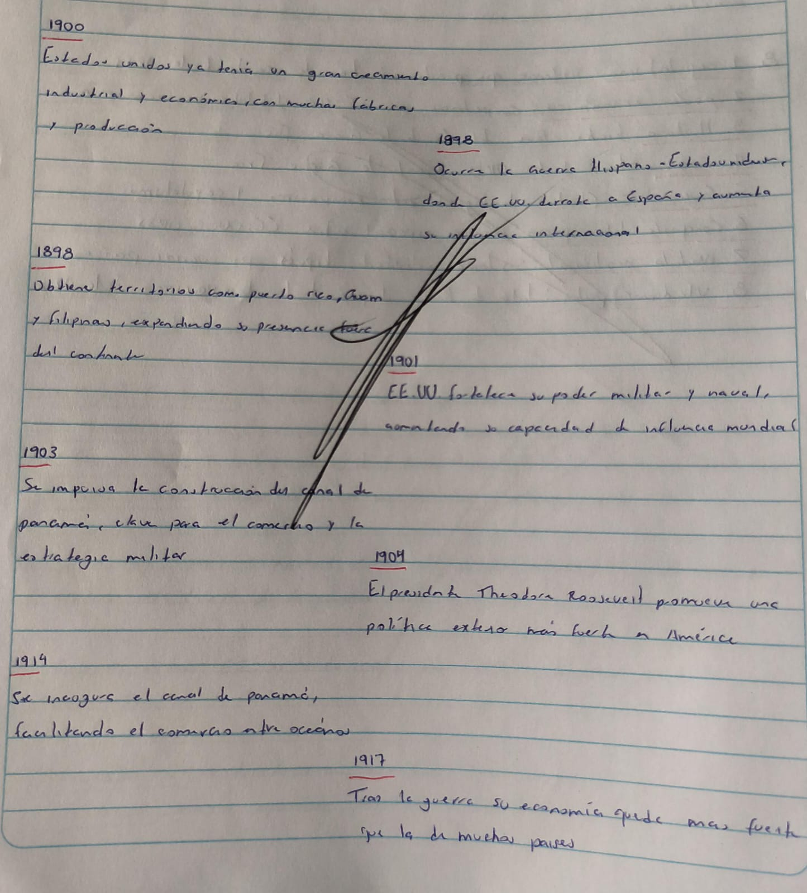
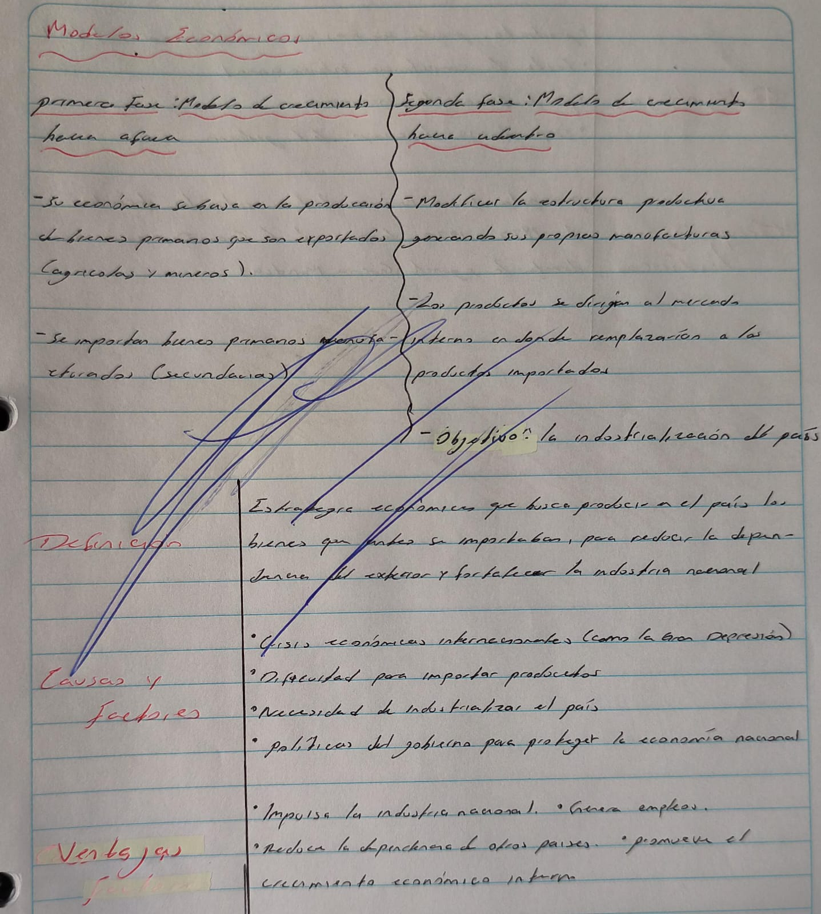
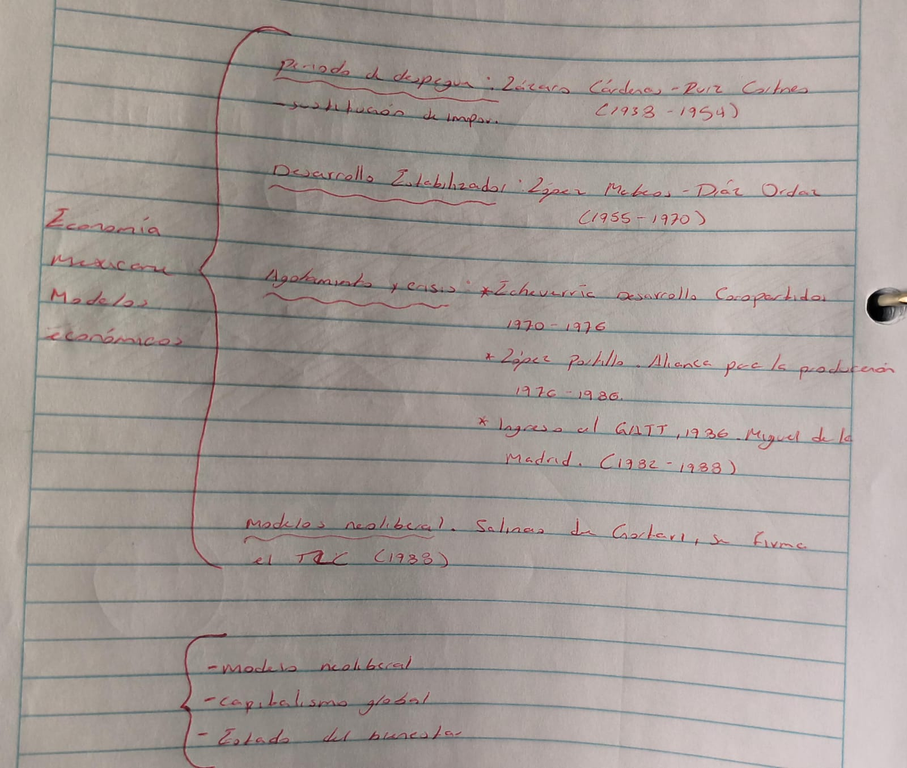

Analizamos los grandes desastres del siglo XX, como la caída económica de 1929 y la violencia de las guerras mundiales. Aprendimos que, tras vivir bajo gobiernos que controlaban todo por la fuerza, surgió la necesidad de promover una Cultura de Paz basada en el respeto, el diálogo y los derechos humanos para evitar que se repitan esas tragedias.

En esta actividad analizamos cómo se dividió el planeta durante la Guerra Fría. Vimos que mientras las potencias peleaban, surgió un grupo de países (el Tercer Mundo) que decidió no unirse a ningún bando. Aprendimos que su objetivo era ser independientes, ayudarse entre ellos y mejorar sus economías sin depender de los países ricos del norte.

Aquí revisamos por qué se desintegró la Unión Soviética en 1991 y qué pasó después. Aprendimos que la falta de dinero y el deseo de libertad de varios países causaron su caída. También vimos cómo el mundo cambió hacia el capitalismo y el modelo neoliberal, con nuevos líderes como Vladimir Putin tomando el control en Rusia.

En esta hoja trazamos una línea de tiempo sobre cómo Estados Unidos se convirtió en una potencia mundial a principios del siglo XX. Aprendimos hitos clave como la construcción del Canal de Panamá para el comercio y cómo sus victorias en guerras y su gran cantidad de fábricas los pusieron a la cabeza de la economía global.

En este ejercicio comparamos dos formas de manejar un país: vender materias primas al extranjero o fabricar todo dentro de casa (Sustitución de Importaciones). Aprendimos que producir tus propias cosas ayuda a generar empleos y a no depender tanto de lo que pasa en otros países, especialmente durante las crisis internacionales.

Finalmente, repasamos las etapas de la economía en México, desde el periodo de crecimiento con Lázaro Cárdenas hasta la llegada del modelo neoliberal con Salinas de Gortari. Aprendimos cómo el país pasó de proteger su propia industria a abrirse al comercio mundial con tratados como el TLC (Tratado de Libre Comercio).
